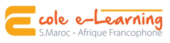

École e-Learning ES.Maroc.org
Afrique Francophone
Pour professionnaliser le secteur associatif africain francophone et aider les acteurs à structurer et développer durablement leurs activités
S'inscrire à la nouvelle édition

Une école en ligne au cœur du renforcement des capacités des associations en Afrique
Fondée en 2018 avec l'ONG italienne Soleterre et l'association marocaine ES.Maroc.org, l'École e-Learning est un centre de formation qui accompagne les associations d'Afrique francophone à :
- Bien se structurer
- Appliquer aux appels d'offres internationaux
- Savoir bien gérer les financements
- Atteindre plus de bénéficiaires
L'école en chiffres
Notre formation e-Learning
La formation est animée par des formateurs internationaux à travers des cours en ligne gratuits. Choisissez votre module :
Gestion des projets
Contrôles de gestion financière et comptable
Communication stratégique
Méthodologie de la levée de fonds
Les cours sont structurés comme des Labs où les participants apprennent concrètement ce qu'il leur faut pour se présenter aux bailleurs de fonds publics et privés. Ils ont lieu une fois par semaine durant 3 mois et chaque module a une durée de 12 heures, pour un total de 48 heures.

Le pitch final
Afin de permettre aux associations qui ont bien travaillé de vérifier les compétences acquises et de leur donner l'opportunité de travailler sur un projet spécifique, un pitch est organisé à la fin de chaque cours.
Chaque participant peut présenter son propre projet et un jury d'experts sélectionnera le/les meilleur/s projet/s, qui reçoit un financement de l'école :
Ce que l'on dit de nous
"Merci infiniment pour vos observations et suggestions. Merci aussi pour tout ce que vous nous avez donné pendant le cours."
Franck Olivier Hounguevou Secrétaire Général, ONG Vodia Côte d'Ivoire"L'espoir retrouvé nous le devons entièrement à ESMaroc.org – Afrique Francophone qui offre des opportunités aux jeunes associations naissantes pour non seulement renforcer leur capacité, mais aussi afin qu'elles trouvent des voies et moyens de pérenniser leurs activités."
Affoussiata Fofana Présidence, ONG Tous pour la relance Côte d'Ivoire"Je capitalise à travers vous, une valeur ajoutée que je mettrai au service du développement de ma communauté. Je ne vous remercierai jamais assez."
OuedraogoRaogo Association Voix pour le développement, Burkina Faso"Je tiens à vous remercier abondamment pour cette possibilité qui m'a été offerte et à AKA pour bénéficier de cette formation. Cette formation m'a beaucoup éclairé pour le développement des associations."
Hièreté Hien AKA - AtalèpoKpoko Association, Burkina Faso"Toutes mes reconnaissances pour cette opportunité riche en leçons apprises que nous allons travailler à capitaliser via un partage d'expérience aux profit des autres membres de l'association."
Pare Ousséni Secrétaire Général, Association des Citoyens Leaders (ACLE), Burkina Faso"C'était un réel plaisir de participer à cette formation qui est très intéressante. Je souhaiterais cependant continuer la collaboration avec vous pour permettre aux associations du Sénégal de bénéficier de ces formations."
Birahim Diop Réseau de Citoyens Intègres et Actifs (RCIA), Sénégal"C'est avec grande joie que je reçois ce certificat. Je parlerai de votre école aux associations qui auront besoin de se former car celui qui veut aller loin doit chercher les connaissances nécessaires pour gravir les échelons, une fois de plus merci. Grand merci à vous."
Sighata William Ouattara Président fondateur, ONG Esperance de vie, Côte d'Ivoire"Je vous suis très reconnaissant pour la formation que vous nous avez dispensées, une formation très technique, de qualité et professionnelle. toute notre gratitude pour l'opportunité que vous nous avez offerte."
Daouda SANA Secrétaire Général, Centre Culturel Islamique du Burkina (CCIB), Burkina Faso"Merci pour la qualité du programme. Je suis satisfait à 99%. Je vous suis très reconnaissant pour la formation que vous nous avez dispensées, une formation très technique, de qualité et professionnelle."
anoh Amani Evrard Bertrand Afriki-papyrus, Côte d'Ivoire"Je suis très reconnaissante à vous vraiment. Une formation très enrichissante. Merci pour la qualité du programme. Je suis satisfait à 100%"
Rida Iagzizir Association Pont de développement pour l'insertion sociale, la culture et l'environnement, Maroc"Nous tenons à vous remercier pour cette belle initiative qui a permis de renforcer la capacité de ceux qui ont pris part à cette formation qui était vraiment de très bonne qualité."
Alliance fraternelle Burkina Faso


Rejoignez la prochaine édition
Inscrivez-vous dès maintenant pour participer à notre programme de formation en ligne gratuit et certifiant.
S'inscrire